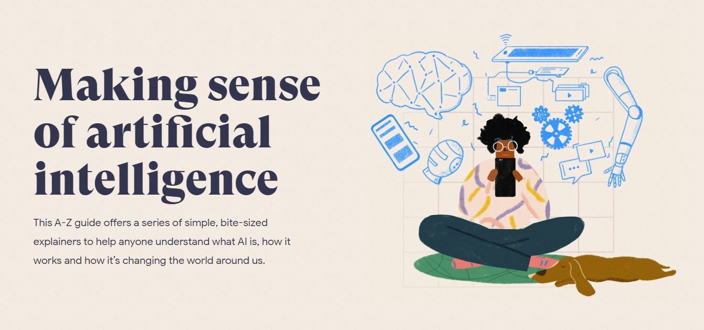

Twin İçerik Ekibinin oluşturduğu Yapay Zeka müfredatının tüm kaynaklarına ulaşın.
Twing uygulaması ve diğer birçok etkileşimli uygulama ile yürüttüğümüz canlı Youtube videolarını izleyin!
Başlangıç Dersi: 2 saat
Yapay zeka çok geniş bir ilgi alanı etrafında toplanmış, birçok araştırmacısı ve uygulayıcısı olan bir alandır. Bu alan, insan gibi düşünebilen makineler üretmeyi hedefler. Doğal etkileşimi yakalayabilen tüm sistemler yapay zekanın ilgi alanındadır.
İlk Modül: 8 saat
Yapay zeka (YZ) müfredatının ilk modülü Akıllı Arayüz Uygulamaları ile başlamaktadır. Bu başlangıcı iki sebepten dolayı yapıyoruz: (1) Öğrencilerin Scratch veya başka bir kodlamaya giriş ortamı ile yarattığı arayüzlerin üzerinden bağlantılar kurabilmek, yani zaten bildikleri kavramları güçlendirmek, (2) yapay zekanın hangi arayüzlerde kullanıldığının farklı örneklerini vererek, hangi ürünlerde yapay zeka, hangi ürünlerde normal kodlamanın kullanılması gerektiğini içselleştirmek.
İkinci Modül: 15 saat
Yapay zeka (YZ) müfredatının ikinci aktivitesi bilgisayarlı görü ile başlamaktadır. Bilgisayarlı görü, sinemadaki yeşil ekran tekniğinden, tıpta tümörlerin belirlenmesine kadar farklı uygulama alanlarına sahiptir. Yapay zekanın, çevre algısı geliştirmesinde önemli bir yere sahiptir. Bu aktivite ile, öğrencilerin yapay zekanın uygulama alanları hakkında bilgi sahibi olmasını, temel algoritmaları geliştirebilmelerini, çeşitli yapay zeka ürünlerini deneyimleyebilmelerini ve toplum için yapay zeka hakkında fikir yürütmelerini amaçladık.
Son Modül: 12 saat
Yapay zeka (YZ) müfredatının son modülü bilgisayarların sesleri nasıl tanıdığını ve cümleleri nasıl anlamlandırabileceğini göstermeyi hedefler.. Bu modülde öğrenciler, yapay zekanın farklı uygulama alanları hakkında bilgi sahibi olur, ses tanıma, sınıflandırma ve doğal dil işleme konusunda temel algoritmaları geliştirir, çeşitli yapay zeka ürünlerini deneyimler ve toplum için yapay zeka hakkında fikir yürütür.
Google ve Oxford'un beraber hazırladığı bir websitesi olan "A to Z AI" websitesinden içerikleri okuyalım ve öğrencilerin bu zamana kadar öğrendikleri kavramlar ile ne kadar uyumlu olduklarını tartışalım. Farklı düşünceler çıkıyor mu?
